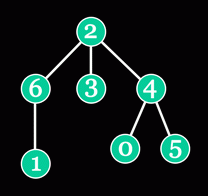

A tree is a connected graph with no cycles. A rooted tree has one special vertex - the root (vertex 2 in the picture below).
Vertex w is an ancestor of vertex v if w lies on the shortest path from the root to v. Vertex w is a parent of vertex v if it is an ancestor of v and is directly connected to v. For example, vertices 0, 2 and 4 are ancestors of vertex 0, and vertex 4 is a parent of vertex 0. The lowest common ancestor (LCA) of vertices v and w is the common ancestor of v and w which is located as far from the root as possible. For example, the LCA of vertices 1 and 3 is vertex 2, and the LCA of vertices 5 and 0 is vertex 4.
You will be given a String[] lca, with each element of lca being a space-separated list of integers. The i-th integer in the j-th element of lca represents the LCA of vertices i and j (all indices are 0-based). Using this information, you are to reconstruct the whole rooted tree. Find parents for all the vertices and return them in a int[]. The i-th element of the result must represent the parent of vertex i (use -1 for the parent of the root).
Class: InverseLca Method: getParents Parameters: String[] Returns: int[] Method signature: int[] getParents(String[] lca) (be sure your method is public)
0)
{"0 0 0",
"0 1 0",
"0 0 2"}
Returns: {-1, 0, 0 }
A simple tree with 3 vertices. Vertex 0 is the parent for both vertices 1 and 2.
1)
{"0 0 0",
"0 1 1",
"0 1 2"}
Returns: {-1, 0, 1 }
2)
{"0 2 2 2 4 4 2",
"2 1 2 2 2 2 6",
"2 2 2 2 2 2 2",
"2 2 2 3 2 2 2",
"4 2 2 2 4 4 2",
"4 2 2 2 4 5 2",
"2 6 2 2 2 2 6"}
Returns: {4, 6, -1, 2, 2, 4, 2 }
The example from the problem statement.
3)
{"0 0 0 0","0 1 0 1","0 0 2 0","0 1 0 3"}
Returns: {-1, 0, 0, 1 }
This problem statement is the exclusive and proprietary property of TopCoder, Inc. Any unauthorized use or reproduction of this information without the prior written consent of TopCoder, Inc. is strictly prohibited. (c)2003, TopCoder, Inc. All rights reserved.